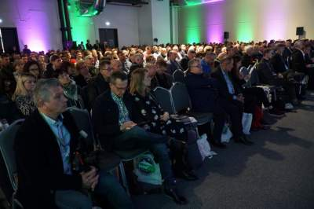

Najświeższe wiadomości ze świata rolnictwa
Rolnictwo dzięki nowym technologiom, innowacjom i po części za sprawą nowych restrykcyjnych przepisów, zmienia się na naszych oczach. W tych zmianach uczestniczy i nakreśla kierunki rozwoju rolnictwa także firma BASF. Stara się przy tym prowadzić biznes odpowiedzialny społecznie, o czym mówiono na Konferencji BASF Media Event, która odbyła się 10 października w Nunhem (Holandia).

Tegoroczna, VII edycja konferencji "Farmera" Narodowe Wyzwania w Rolnictwie ponownie cieszyła się ogromnym zainteresowaniem. W sumie w trwającym przez cały dzień kilkudziesięciu wykładom, prezentacjom i debatom przysłuchiwało się ponad 1200 osób. Zabaczcie jak to wyglądało w obiektywie.

Bramy bioasekuracyjne dostępne są na polskim rynku już od 3 lat. Daniel Wyczółkowski z firmy Unidoz mówi w rozmowie z naszym portalem o zainteresowaniu rolników tą technologią, oraz możliwościach skorzystania z dofinansowania na zakup bram